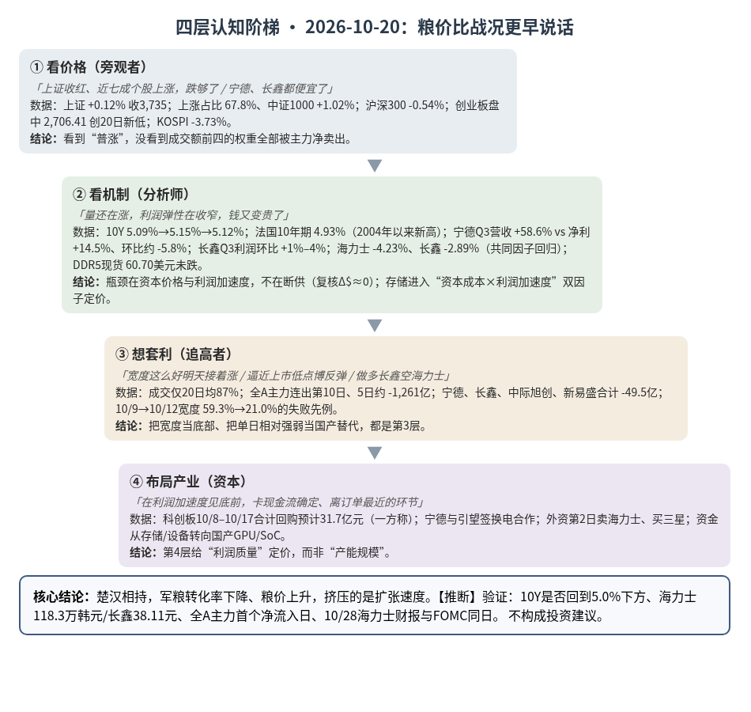
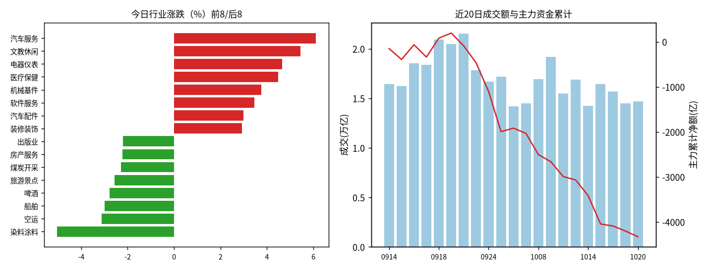
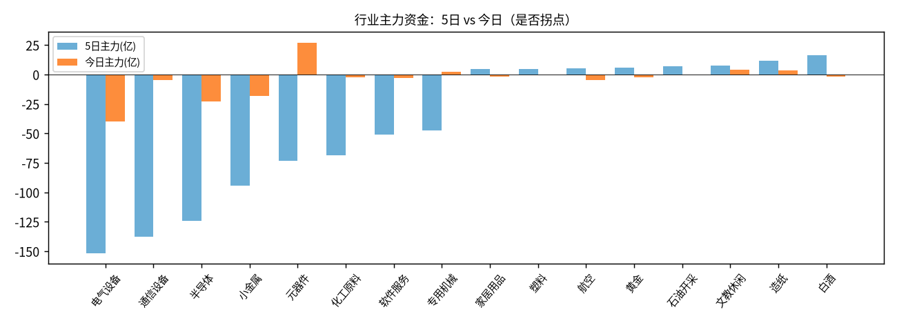

A股投研日报 · 2026-10-20（四层认知版）
量还在涨，利润弹性在收窄，钱又变贵了。“二阶导定价”从存储扩散到电池：继长鑫三季度归母利润环比只增 1%–4% 之后，宁德时代三季度营收同比 +58.6%，归母净利润只增 14.5%，环比还降了约 5.8%（推算）。同一天资本端重新收紧：10 年美债从 5.09% 回到 5.12%–5.15%，法国 10 年期国债升到 4.93%，是这组数据有记录（2004 年）以来的最高；KOSPI 以“AI 融资担忧”为由跌 3.73%。A 股用“指数不跌、宽度修复”掩护权重派发：全 A 成交额前四（宁德、长鑫、中际旭创、新易盛）主力合计净流出约 49.5 亿元，全 A 主力连续第 10 日净流出，成交低于 20 日均值。这是权重去拥挤加题材轮动，不是底部确认。
本报告为基于公开数据的研究分析，不构成投资建议。
方法：四层认知阶梯 + 历史周期律（
cognitive-ladder.md/references/cases.md）。市场数据来自 Tushare Pro（见附录）；产业/宏观数据附来源链接；推断=本文判断；“一方称”=未经独立核验的单方说法；“推算”=本文用公开数字计算。本期为补发（原定 10/20 20:00 例行任务未完成）。不构成投资建议。
今日市场概况
- 指数：上证指数 +0.12% 收 3,735.37（盘中低点 3,702.44），深证成指 -0.14%，创业板指 -0.26% 收 2,739.20，盘中 2,706.41 再创 20 日新低；科创50 +1.00%，中证1000 +1.02%，沪深300 -0.54%、上证50 -0.31%。小盘强、权重弱，中证1000 与沪深300 当日差 1.56 个百分点（推算）。近 5 日创业板指 -7.41%、科创50 -5.94%、上证50 -1.48%（Tushare，见附录）。
- 量能与宽度：成交 14,715 亿元，较上日 +1.6%，约为 20 日均值 17,002 亿元的 87%（推算）；上涨 3,778 家 / 下跌 1,668 家，上涨占比 67.8%（上日 40.9%），个股中位数 +1.0%；涨幅 ≥9.8% 的 97 家、跌幅 ≤-9.8% 的 15 家。
- 主力资金：全 A 主力（大单+特大单）-127.7 亿元，连续第 10 日净流出；近 5 个交易日合计约 -1,261 亿元（推算）。
- 行业：半导体价 +1.5%、主力 -22.6 亿，其中长鑫科技一只 -17.1 亿，剔除后约 -5.5 亿（推算）；内部分化明显，国产 GPU 与 SoC 大涨（摩尔线程 +11.16%、全志科技 +11.27%、瑞芯微 +10.00%），设备回落（中科飞测 -6.37%、拓荆科技 -4.38%）。通信设备价 +1.4%、主力 -4.9 亿，其中中际旭创 -8.5 亿、新易盛 -8.5 亿，10/19 流入的光通信龙头今天转为流出。电气设备 -1.0%、主力 -40.1 亿，资金连续 6 日流出，其中宁德时代 -2.97%、主力 -15.4 亿。元器件主力 +27.2 亿，价 +2.4%，是今天唯一的大额流入，集中在消费电子与 PCB（长盈精密 +6.8 亿、超声电子 +4.0 亿、立讯精密 +3.9 亿）。涨幅居前多为小体量板块：汽车服务 +6.11%、文教休闲 +5.44%、电器仪表 +4.65%、医疗保健 +4.48%（Tushare moneyflow，推算）。
- 龙虎榜 / 北向：机构专用席位合计 +2.54 亿元，净买入居前海天瑞声（+3.55 亿）、乐鑫科技（+3.47 亿）。北向每日净买入自 2024 年 8 月起不再披露，沪深股通成交前五为宁德时代、中际旭创、新易盛、药明康德、中微公司（成交额≠净买入）。
- 海外与宏观：周一（10/19）美股反弹，纳指 +1.11%，费城半导体指数 +1.61%，结束 2008 年以来最长的八连跌；但费半盘初一度 +3.7% 后回落，CoreWeave 盘初涨近 8% 后收 -0.4% 源。今天 KOSPI -3.73% 收 5,552.74，盘中下探 5,493.24；SK 海力士 -4.23% 收 122.3 万韩元（盘中 -7.36%），三星电子 -2.98%；外资净卖海力士 3,941 亿韩元、净买三星 3,865 亿韩元，韩联社把下跌归因于法国政治与财政不安、美债收益率上行引发的 AI 基建融资担忧 源源。10 年美债官方收益率 10/16 为 5.09%、10/19 为 5.15%、10/20 为 5.12% 源；法国 10 年期 TEC10 10/19 为 4.853%、10/20 为 4.928% 源。原油：胡塞武装称袭击沙特能源设施（沙特未证实），布伦特盘中最高 111.99 美元，为五个月新高，收 108.79 美元（-0.69%）；WTI 11 月合约收 101.79 美元 源源。DDR5 16Gb 现货 60.70 美元，上日 60.633 美元，没有转跌（TrendForce，经世界指标面板）。国内 LPR 维持 1 年期 3.0%、5 年期以上 3.5% 源。
- 盘后：宁德时代三季报：三季度营收 1,652.21 亿元（同比 +58.58%），归母净利润 212.46 亿元（同比 +14.54%），二季度为 225.46 亿元 源。同日摩根大通将其 H 股评级下调至“中性” 源。美股 10/20 收盘：标普 +0.28%、纳指 -0.02%，WSJ 称“财报强劲抵消 AI 信用担忧” 源。
变化点
与上一交易日（10/19）相比：
- 长鑫与海力士“分道”一天后，共同因子回来了：10/19 长鑫 -7.77%、海力士 +0.39%，属个体因子；今天长鑫 -2.89% 收 40.32 元，盘中 39.81 元，逼近上市首日低点 38.11 元，海力士则跌得更多（-4.23%）源。为何重要：存储股在同时交易两个因子，一个是全球融资与折现率（共同因子），一个是利润增速的二阶导（个体因子）。拉长看，自 9/30 起长鑫 -26.4%、海力士 -31.1%（推算），“中国存储被单独惩罚”并不成立（变化二）。
- 10/19 的“利率松”只维持了一天：10Y 5.09%→5.15%→5.12%；法国 10 年期升至 4.93%。韩国把这直接定价为“AI 融资担忧”。为何重要：10/19 “资本分级”判断中的“无风险利率层在松”需要降级为“高位胶着”（变化一）。
- A 股科技资金回流没能延续到第 3 日：半导体主力 +4.7 亿→-22.6 亿，通信设备 +21.5 亿→-4.9 亿，电气设备 -24.2 亿→-40.1 亿；价格却是半导体 +1.5%、通信设备 +1.4%，价涨资金走。宽度从 40.9% 跳到 67.8%，但成交没跟上。
- 二阶导定价扩散到电池：宁德三季度营收同比 +58.6%，归母净利润同比只有 +14.5%，环比约 -5.8%（推算）。这与长鑫“营收环比 +15%–21%、归母利润环比 +1%–4%”的形状相同 源。为何重要：两只成交额最大的 A 股说明的是同一件事：量的弹性大于利润的弹性。
与上周相比：
- 世界指标面板（10/20）：五盏灯 4 黄 1 红。红灯是“估值 / 情绪（美股）”，读数为席勒市盈率 CAPE 40.7、巴菲特指标 255%、保证金债务同比 +31.4%。当日唯一跨阈值变化是 VIX 期限结构（VIX/VIX3M）由 0.98 降到 0.94，转为🟢，距危险线 1.00 还有 0.06。“流动性”灯仍为🟡，最紧的三项是 10Y 实际利率 2.74%、CoreWeave 五年 CDS 约 1,200bp、HY OAS 329bp 源。为何重要：恐慌指标在降温，杠杆与估值仍在顶部区域，两者叠加的典型形态是“波动收敛中的估值风险”，而不是“恐慌见底”推断。
- 全 A 5 日主力约 -1,261 亿元（10/19 时 5 日约 -1,239 亿），电气设备、通信设备、半导体 5 日合计约 -414 亿；创业板 5 日 -7.41%。周度去拥挤没有减速。
中长期展望
3–12 个月（到 2027 年中）： - 强化的趋势：①**“量价齐升→量升利稳”：长鑫与宁德两个中国产能龙头先后显示利润弹性小于营收弹性（变化二、变化点 4），资本市场从按“量”定价切换到按“利润加速度”定价推断；②资本价格高位胶着**：10Y 美债在 5.1% 附近、实际利率 2.74%，法国长端创新高，“谁的资本更便宜”仍决定 AI 基建扩张的速度（维持 10/19 “资本分级”）；③估值风险高位：面板估值灯为红，CAPE 40.7、巴菲特指标 255%，这类指标对 1–3 年回报有统计意义，对择时没有推断。 - 减弱的趋势：①**“利率见顶→科技反转”的叙事：10/19 只松了一天；②存储价格加速度**：现货仍稳（DDR5 60.70 美元），但合约涨幅收窄（10/19 已述），HBM 页“2027 年 HBM 涨价靠 DDR5 抢晶圆”这根杠杆的力度面临下修风险，方向不变。 - 未变的判断：CoWoS 页“2027 年最紧一环是 ABF 载板（估）”、HBM 页“2027 年只略紧（满足率约 90%）、周期顶部看 2027 年下半年”今日都没有新的反证。说明：本报告只做方向标注，不改动 HBM/CoWoS 页的核心判断与模型数字（改动需 John 批准）；CoWoS 页 2027 年电力假设与 Jefferies 的 18GW 口径疑似不一致，已列入本周五链条跟踪核对。
走向 2027： - 利润迁移的方向：扩产型龙头（存储、电池）进入“量还在增、单位利润被稀释”的阶段，利润继续向扩得慢的物理环节（载板、HBM）和把钱和电变成机柜的环节（有担保融资、冷却、配电）集中推断。中国账本上，长鑫 4F² 放量在 2027 年末–2028 年上半年（一方称，见 10/19），是 2028 年的供给变量。 - 什么会改变展望：①10/28 海力士财报与 FOMC 同日：营业利润明显低于一致预期 76.96 万亿韩元，或下调 2027 年资本开支，则存储从二阶导担忧升级为一阶导担忧；同日加息则无风险利率层重新收紧；②四季度常规 DRAM 合约实际涨幅 <10%，则需重估 HBM 页价格判断；③CSP 三季报下调 2027 年资本开支，则需求端下修；④10Y 连续回到 5.0% 以下、同时信用利差收窄，则资本约束降级。
一、世界观定位（先问三句）
- 属于哪一阶段？三国鼎立→楚汉之争过渡带，今日是“楚汉·军粮涨价日”（无阶段切换信号）。
- 三国层（科技/产能）实物端未证伪：DDR5 现货 60.70 美元，自 10/14 的 60.10 美元累计 +1.0%（推算）；韩国 10 月 1–10 日芯片出口同比 +170.9%（世界指标面板）。
- 楚汉层（金融）收紧：10Y 回到 5.1% 以上、法国长端创新高、布伦特一度 111.99 美元；中国侧 LPR 不变、10 年国债约 1.635%，中美利差约 350bp（世界指标面板），“关中粮仓”仍稳。
- 命中哪个历史原型？沿用“萧何转漕 + 彭越断粮道”，今日补一处：楚汉相持期，粮价比战况更早反映胜负。
- 剥结构：产能（兵）还在扩，但每多一份产能换来的利润（军粮转化率）在下降，粮价（资本成本、油价）又在上升，两头挤压的是“扩张速度”。
- 为何不换原型：结构仍是“战力 vs 粮道”；今天的新信息（宁德、法债）是同一结构的又一个实例，属强化不属替换。
- 验差异：现代版有央行与财政托底（中国侧 LPR 稳、回购潮：10/8–10/17 长鑫、佰维、拓荆等科创板公司合计回购预计 31.7 亿元，一方称 源），所以“断粮”表现为估值压缩，而不是兵败。
- 领先指标指向？ 世界指标面板 4 黄 1 红：衰退风险🟡（确认类指标初请、萨姆未亮）、流动性🟡、估值/情绪🔴、中国信用与通胀🟡（PPI−CPI +4.1pp、信贷脉冲 -2.58%GDP）、AI/半导体周期🟡（需求强，但融资和价格出现背离）。纪律：方向≠节奏，这是年度维度的定价切换，不是日线信号。回退条件：10Y 连续回到 4.8% 以下且 CSP 上调资本开支，则瓶颈回到物理端；DDR5 现货周跌 >3% 或 CSP 下调资本开支，则改判为需求端出问题。
二、变化一（主变化）：资本端再收紧，A 股用宽度掩护权重派发
第1层 · 看价格
- 标志性话语：「上证收红、近七成个股上涨，跌够了」「宁德、长鑫都便宜了」。
- 数据：上证 +0.12%、上涨占比 67.8%、中证1000 +1.02%；同时沪深300 -0.54%，创业板盘中 2,706.41 创 20 日新低；KOSPI -3.73%。
结论：第1层看到的是“普涨”，没看到普涨发生在成交额前四的权重全部被净卖出的同一天。
第2层 · 看机制
- 标志性话语：「指数是权重的，宽度是题材的；钱从贵的地方流向便宜的地方，但总量在减少」。
- 机制推导（续 10/19 的 TOC 链：晶圆→存储→电力→资本，今日把“资本”再细化）：
- ①无风险利率层由松转胶着：10Y 5.09%→5.15%→5.12%；法国 10 年期升至 4.928%，起因是国内政治与财政不安（韩联社转述）；布伦特一度 111.99 美元（胡塞袭击说法未获沙特证实）。
- ②传导到“融资依赖型”资产：韩国是 AI 硬件纯度最高的市场，外资与机构合计净卖约 1.54 万亿韩元（5,333 亿 + 10,048 亿，推算），海力士盘中 -7.36%；美国 10/20 标普 +0.28%、纳指 -0.02%，WSJ 用“AI 信用担忧”概括。
- ③A 股的形态：权重派发 + 题材承接：成交额前四的宁德（-15.4 亿）、长鑫（-17.1 亿）、中际旭创（-8.5 亿）、新易盛（-8.5 亿）合计约 -49.5 亿，接近全 A 当日净流出的四成（推算）；承接方是小盘与题材（国产 GPU、SoC、消费电子/PCB、机器人），元器件 +27.2 亿是唯一大额流入。推断这是存量资金从“高成交、高机构持仓”的权重向“低持仓、高弹性”的品种迁移，不是新增资金入场。
- ④利润端二阶导叠加：宁德三季度归母净利润同比 +14.5%（营收 +58.6%）、环比约 -5.8%（推算）；财报前收盘已先跌 2.97%。
- 风险敞口接口：今日脚本事件经复核，有效断供 Δ$≈0（见第五节），物理瓶颈没有恶化。今天的约束全部来自资本价格与利润弹性，不来自断供。
结论：瓶颈仍在资本端；10/19 “利率层在松”的判断被一天证伪为“高位胶着”。A 股指数平稳靠的是题材承接权重抛压，主力连续 10 日净流出说明总量在收缩推断。
第3层 · 想套利
- 标志性话语：「宽度这么好，明天接着涨」「宁德跌到 14 倍 PE 底线，抄」。
- 想追宽度：成交只有 20 日均值的 87%，普涨品种的主力净额以个位数亿计，承接的是权重抛出的筹码，不是增量。10/9 上涨占比 59.3% 之后，10/12 跌回 21.0%（附录），宽度单日反弹的延续性在本轮已经失败过一次。
- 想抄权重：宁德 A 股较 5 月高点已跌约四成，券商测算的静态 PE 底线 14 倍（国信，一方称）源；但三季度利润环比下降，“估值底”要靠利润加速度确认，而这正是市场在重新定价的东西。
结论：把“宽度修复”当底部、把“估值便宜”当买点，都是第3层；路径被「存量换仓 + 利润二阶导 + 10/28 FOMC/海力士日历」焊死。
第4层 · 布局产业
- 标志性话语：「在利润加速度见底之前，卡住现金流确定、离订单最近的环节」。
- 资本动作：发行人自己在恐慌期回购（科创板 10/8–10/17 合计预计 31.7 亿元，一方称）；宁德与引望、时代电服 10/19 签署换电战略合作 源，这是龙头在利润增速放缓时用生态绑定锁定未来的量。韩国侧，海力士自身回购接近尾声，“其他法人”净买 6,352 亿韩元（韩联社）。
- 格局含义（非个股建议）：第4层的人在给“利润质量”定价，不是给“产能规模”定价；受益方向偏现金流确定、扩产节奏慢的环节，受压方向偏高资本开支、靠下游持续扩产的环节（设备、电池扩产链）推断。
结论：第4层在用回购和生态协议给利润质量托底；卡位句柄是现金流与订单可见度，而不是指数宽度。
检查清单应用：缺口性质 = 资本价格上行是人为/金融缺口（财政、货币政策、地缘风险溢价），可以快速反转，需要左顾右盼；利润弹性收窄是周期性的（扩产后单位利润被稀释），持续时间以季度计。替代弹性 = 资金在市场之间替代高（韩→A、权重→题材），但总量受成交额约束；企业融资渠道替代中等（回购、股权、债务）。领先 vs 滞后 = 领先：10Y 与法德利差、VIX/VIX3M、全 A 主力连续天数、成交与 20 日均值之比；滞后：季报利润、指数收盘。
与案例库交叉验证（变化一）
| 案例 | 案例核心论点 | 今日数据 | 判定 |
|---|---|---|---|
| 案例7 字节296亿贷款（楚汉层） | 融资时机=alpha；利率上行时替代弹性改变 | 10Y 5.09%→5.12%–5.15%；KOSPI 以 AI 融资担忧跌 3.73% | 强化：资本价格仍是 AI 链扩张的约束 |
| 案例9 宇树（筹码结构） | 流通盘与解禁决定价格节奏，散户接盘 | 宽度 67.8% 但成交额前四全部主力净流出 | 强化：题材承接权重抛压的分发形态 |
| 案例3 装片机/键合机 | 订单≠收入；设备节奏领先放量 | 设备股回落（中科飞测 -6.37%、拓荆 -4.38%）；国产 GPU 走强 | 分化：市场在区分“已有订单”与“等扩产”，订单数据待补充 |
| 案例8 另类数据 | 过程领先结果 | 资金流（过程）先于宁德季报（结果）走弱：收盘 -2.97%、主力 -15.4 亿 | 强化 |
三、变化二（中国账本）：存储的双因子定价——共同因子回归，个体因子未解除
第1层 · 看价格
- 标志性话语：「长鑫逼近上市低点了，见底了吧」「海力士比长鑫跌得还多，国产替代逻辑赢了」。
- 数据：长鑫 -2.89% 收 40.32 元（盘中 39.81 元，上市首日低点 38.11 元），较 8 月高点回调 34%，10 月以来跌超 26% 源；海力士 -4.23%。10/15 以来长鑫 -7.5%、海力士 -3.1%；9/30 以来长鑫 -26.4%、海力士 -31.1%（推算）。
结论：第1层用单日涨跌讲故事；换一个窗口，结论就反过来。
第2层 · 看机制
- 标志性话语：「存储股同时在交易两件事：钱有多贵，以及涨价还能不能加速」。
- ①共同因子（融资与折现率）：今天海力士、三星、长鑫同跌，韩联社的归因是美债上行与 AI 融资担忧。这个因子 10/19 暂时缺席（费半反弹），今天回来了。
- ②个体因子（利润二阶导）：长鑫三季度归母利润环比 +1%–4%，以中位数计约 +2.5%，低于市场预期（金融界转述）源；10/19 单日 -7.77% 就是这个因子。今天它没有解除：股价没有收复 45 元，主力 -17.1 亿元、成交 145.49 亿元仍居全 A 第二。
- ③韩国内部换手第 2 日：外资净卖海力士 3,941 亿韩元、净买三星 3,865 亿韩元（10/19 为卖海力士 2,176 亿、买三星 1,720 亿）。推断资金在从“HBM 纯度高、估值高”的标的向“通用 DRAM 敞口大、估值低”的标的迁移，与“HBM 涨价加速度最先见顶”的担忧一致。
- ④实物端未坏：DDR5 16Gb 现货 60.70 美元，没有转跌；韩国 10 月 1–10 日芯片出口同比 +170.9%（世界指标面板）。
- ⑤A 股半导体内部：资金流入国产 GPU/SoC（摩尔线程、瑞芯微、全志、沐曦），流出存储与设备（长鑫、中微、中科飞测、拓荆）。推断国内资金在押“国产算力需求”，回避“扩产资本开支”。
结论：存储周期没有反转（现货稳、出口强），定价逻辑已从单因子（缺货）变成双因子（资本成本 × 利润加速度）。“长鑫被单独惩罚”目前不成立，但个体因子还在推断。HBM 页中国账本的判断（长鑫 HBM 收入可忽略、赚的是通用 DRAM 的钱）不变。
第3层 · 想套利
- 标志性话语：「做多长鑫、做空海力士，赌国产替代」「逼近上市低点，博反弹」。
- 发现①：两者相对强弱随窗口翻转（10/15 以来长鑫弱约 4.4pct，9/30 以来长鑫强约 4.7pct，推算），说明配对交易交易的是因子暴露，不是份额迁移；4F² 放量在 2027 年末以后（一方称）。②上市低点 38.11 元附近叠加网下限售 2027-01-27 解禁（10/19 已述），筹码结构会放大波动（同案例9）。③10/28 海力士财报与 FOMC 同日，两个因子在同一天揭晓，波动集中。
结论：用单日相对强弱做“国产替代配对”= 第3层；路径被「双因子 + 解禁日历 + 10/28 事件集中」焊死。
第4层 · 布局产业
- 标志性话语：「不赌一个季度的加速度，卡 2027–28 的产能代际和工艺」。
- 长鑫等科创板公司在 10/8–10/17 密集回购（一方称）；国资与产业基金在 2022–2024 寒冬注资早已卡位（见 10/15）。上游设备今日资金流出，说明市场在等长鑫扩产的资本开支确认推断。
结论：第4层看的是 4F² 与扩产节奏（2027 年末–2028）和回购托底，今日价格对卡位逻辑影响有限。
检查清单应用：缺口性质 = 常规 DRAM 缺口主要是原厂向 HBM/服务器倾斜造成的人为缺口（同案例2 钾肥：寡头控量的缺口，动能先于价格见顶），HBM 仍是技术壁垒型的准自然缺口。替代弹性 = 消费端降规格、减容量对冲涨价，弹性在上升；服务器端弹性低。领先 vs 滞后 = 领先：合约价环比斜率、DDR5 现货、韩国芯片出口、外资在海力士与三星之间的换手方向；滞后：季度利润、股价。
与案例库交叉验证（变化二）
| 案例 | 案例核心论点 | 今日数据 | 判定 |
|---|---|---|---|
| 案例2 钾肥（人为缺口可反转） | 寡头控量缺口的动能先于价格见顶 | 现货 60.70 美元未跌；外资第 2 日卖海力士、买三星 | 强化：动能端在交易，价格端尚未转跌 |
| 案例9 宇树（筹码结构） | 流通盘与解禁决定价格节奏 | 长鑫逼近上市低点 38.11 元；网下限售 2027-01-27 解禁 | 强化 |
| 案例3 装片机/键合机 | 国产替代分层；订单领先收入 | 半导体内部：国产 GPU/SoC 涨、设备跌 | 待补充：设备订单数据未更新，不作判断 |
| 总纲 三国→楚汉 | 资本成本决定科技竞争的速度 | 中美利差约 350bp；回购潮 | 维持：中国侧粮道更稳，但不改变周期二阶导 |
四、上一交易日验证点回顾（10/19 → 10/20）
| # | 验证点 | 今日读数 | 判定 |
|---|---|---|---|
| 1 | 信用阀门：CoreWeave 无担保债 <12% 或 CDS <800bp | CDS 约 1,200bp（面板读数为 10/15 观测）；债券收益率无新数据 | 待补充，不作判断 |
| 2 | 利率阀门：10Y 连续 2 日 <5.0% | 5.15%（10/19）、5.12%（10/20） | 未达标；也未上穿 5.2%，高位胶着 |
| 3 | DDR5 本周累计跌幅 >3% | 60.70 美元，自 10/14 起 +1.0% | 维持「杀估值不杀订单」 |
| 4 | 海力士 10/28 财报 | 未到期（与 FOMC 同日） | 待验证 |
| 5 | 半导体/通信设备主力连续第 3 日流入且创业板收复 2,800；跌破 2,708.9 则出清未完 | 两者均转为流出（-22.6 亿、-4.9 亿）；创业板盘中 2,706.41 跌破 2,708.9，收 2,739.20 | 未命中 / “出清未完”边际触发 |
| 6 | 长鑫相对海力士 5 日继续跑输 >10pct；收复 45 元则判为情绪性抛压 | 第 1 日长鑫相对跑赢约 1.3pct；收 40.32 元 | 待验证（剩 4 个交易日） |
| 7 | CSP 资本开支（Meta 等） | 尚未公布 | 待验证 |
| 8 | 量能：>1.72 万亿且上涨占比 >50% 为增量信号 | 1.47 万亿；上涨占比 67.8% | 只满足宽度、不满足量能：存量换仓不变 |
五、供应链风险敞口（人工复核版）
脚本版见
risk_section_20261020.md。口径为 GB300/NVL72 当量柜年化系统价值；Δ$ 为事件类型假设模板，仅用于排序，非预测。
- 基线：年化 EL $5.77B（约 ¥388 亿），VaR95 $21.73B，CVaR95 $34.20B；EL 前五：Nittobo T-glass（福岛）$1.81B、中际旭创光模块 $0.87B、台积电晶圆厂（台湾）$0.58B、Ibiden ABF 载板 $0.52B、台积电 CoWoS-L（台湾）$0.34B。
- 今日事件复核（脚本 5 条，复核后全部剔除）：
- ①③「沙特利雅得传出爆炸声……SK 海力士跌 4%」（新浪、21 财经两条，脚本判为 fire）：爆炸指向胡塞武装宣称的对利雅得机场与沙特能源设施的袭击（沙特未证实）源，与海力士在韩国的工厂无关；“跌 4%”是股价，不是产能事件。关键词误匹配，Δ$=0。 间接渠道是油价与通胀，已在变化一讨论，不属于断供。
- ②④「长鑫科技大跌 35%……SK 海力士已跌去 59%」（金融界、搜狐两条，脚本判为 shortage）：这是股价与估值新闻，方向与“缺货”相反。误匹配，Δ$=0。
- ⑤「台积电季度净利润创新高、加速全球扩产」（第一财经，判为 capacity）：属产能正面信息。不计断供，Δ$=0。
- 复核后今日有效断供 Δ$≈0（脚本简单加总 $0.99B 作废）。
- 供第 2 层使用：物理断供端平静；最紧单点仍是 T-glass（份额约 90%、新产能最早 2027 年中，参数为假设）。今天的风险来自资本价格与利润弹性（见变化一、二），与断供是两类风险，不能相加。
- 采集降级：GDELT 部分限流、巨潮连接超时（可接受失败）。
六、机会表（产业/环节层面，不构成投资建议）
| 机会 | 变化信号 | 认知层级 | 关键风险 |
|---|---|---|---|
| 国产算力芯片（GPU/SoC）需求链 | 半导体内部资金从存储/设备转向国产 GPU/SoC | 第2层（机制观察） | 单日题材轮动；全 A 连出第 10 日 |
| 利润质量 > 产能规模（扩产型龙头的二阶导） | 宁德营收 +58.6% vs 净利 +14.5%；长鑫利润环比 +1%–4% | 第2层已查证 | 四季度若量价再加速则判断失效 |
| 存储双因子定价（通用 DRAM vs HBM） | 外资第 2 日卖海力士、买三星；现货 60.70 美元未跌 | 第2层 | 10/28 海力士财报 + FOMC 同日 |
| 数据中心冷却/配电/并网（执行层约束） | 10/19 Jefferies 口径（一方称）；今日无新证据 | 第4层（年度观察） | 电气设备 A 股资金连出 6 日 |
| “宽度修复=底部” | 上涨占比 67.8%，但成交为 20 日均的 87%、主力连出 10 日 | 第3层（陷阱） | 10/9→10/12 宽度反弹失败的先例 |
| 黄金等楚汉层底仓 | COMEX 金期货约 4,161 美元（10/20 盘中，面板行情源）；实际利率 2.74% | 世界观层（不看日线） | 实际利率继续上行 |
七、明日/本周验证点（可证伪）
- 利率阀门：10Y 连续 2 日 <5.0%，则无风险利率层确认放松；上穿 5.2%，则资本收紧升级。法国 10 年期回落到 4.8% 以下，则欧洲财政冲击暂缓。
- 韩国存储：海力士跌破 10/20 盘中低点 118.3 万韩元，则全球存储去杠杆延续；外资连续第 3 日“卖海力士、买三星”，则 HBM 加速度见顶的担忧进一步确认。
- 长鑫：有效跌破上市首日低点 38.11 元，则筹码出清进入新阶段；收复 45 元，则 10/19 判为情绪性抛压。
- A 股资金与量能：全 A 主力出现首个净流入日，则连出结束；成交 >1.72 万亿且上涨占比 >50%，则出现增量信号；创业板收盘跌破 2,706，则出清未完确认，收复 2,800 则弱确认。
- 宁德财报后首日：电气设备主力连续 2 日转正，则高位去拥挤结束；若继续大额流出（单日 < -30 亿），则“二阶导定价”在电池链得到确认。
- 现货证伪：DDR5 16Gb 本周累计跌幅 >3%，则推翻“杀估值不杀订单”。
- 油价：布伦特收盘突破 111.99 美元（10/20 盘中高点），则通胀和利率压力再升；跌回 100 美元以下，则地缘溢价消退。
- 世界指标面板：VIX/VIX3M 回到 ≥1.00，或流动性灯转红，则风险升级；估值灯维持红色属常态，不单独作为信号。

一句话总结：粮价比战况更早说话。看价格的人看到七成个股上涨；看机制的人看到权重被净卖、利润弹性收窄、资本又变贵；想套利的人容易把宽度和估值便宜当底部；布局产业的人在用回购和生态协议给利润质量托底，等 10/28 海力士财报和 FOMC 同日揭晓两个因子。
本报告为基于公开数据的研究分析，不构成任何投资建议。
附录：市场数据（证据底稿）


| 收盘 | 今日% | 5日% | 20日% | MA20 | 成交(亿) | |
|---|---|---|---|---|---|---|
| 上证指数 | 3,735.37 | 0.12 | -1.72 | -3.86 | 3,832.38 | 6,999.70 |
| 深证成指 | 11,801.29 | -0.14 | -4.47 | -11.83 | 12,809.92 | 3,699.82 |
| 创业板指 | 2,739.20 | -0.26 | -7.41 | -16.63 | 3,101.30 | 1,497.57 |
| 科创50 | 1,342.42 | 1.00 | -5.94 | -12.16 | 1,511.26 | 752.66 |
| 上证50 | 2,765.77 | -0.31 | -1.48 | -3.33 | 2,822.95 | 1,219.02 |
| 沪深300 | 4,152.11 | -0.54 | -2.89 | -7.32 | 4,352.71 | 3,962.29 |
| 中证500 | 6,841.44 | 0.60 | -3.44 | -9.64 | 7,345.69 | 2,510.07 |
| 中证1000 | 6,766.90 | 1.02 | -3.65 | -9.39 | 7,254.56 | 2,813.98 |
行业资金热力（按5日主力净额排序，前8/后8）
| industry | 今日% | 5日% | 20日% | 今日主力(亿) | 5日主力(亿) | 资金连续天数 |
|---|---|---|---|---|---|---|
| 白酒 | -0.4 | 3.3 | 4.3 | -1.5 | 16.2 | -1.0 |
| 造纸 | -1.7 | -6.1 | 4.4 | 3.4 | 11.8 | 21.0 |
| 文教休闲 | 5.4 | 5.0 | 16.3 | 4.1 | 7.5 | 2.0 |
| 石油开采 | 0.9 | 2.4 | 3.5 | 0.0 | 7.1 | 2.0 |
| 黄金 | -0.8 | -1.1 | -15.4 | -2.4 | 5.7 | -1.0 |
| 航空 | -0.6 | 3.4 | -3.5 | -4.8 | 5.0 | -1.0 |
| 塑料 | 1.2 | 0.7 | 75.7 | -0.3 | 4.9 | -1.0 |
| 家居用品 | -0.1 | 1.2 | 8.5 | -1.5 | 4.4 | -1.0 |
| 电气设备 | -1.0 | -5.4 | -6.3 | -40.1 | -151.8 | -6.0 |
| 通信设备 | 1.4 | -6.5 | -16.4 | -4.9 | -137.8 | -1.0 |
| 半导体 | 1.5 | -7.0 | 18.4 | -22.6 | -124.1 | -1.0 |
| 小金属 | -0.3 | -8.3 | 36.2 | -18.3 | -94.2 | -7.0 |
| 元器件 | 2.4 | -3.0 | -8.4 | 27.2 | -73.1 | 1.0 |
| 化工原料 | 1.1 | -6.2 | -1.6 | -2.6 | -68.4 | -7.0 |
| 软件服务 | 3.4 | 0.5 | 9.4 | -2.9 | -50.9 | -7.0 |
| 专用机械 | 2.2 | -3.3 | 6.2 | 2.5 | -47.6 | 1.0 |
市场情绪时间序列（近10日）
| trade_date | 成交(亿) | 上涨占比% | 主力净额(亿) | 个股中位涨跌% |
|---|---|---|---|---|
| 20260930 | 14500.8 | 46.2 | -116.0 | -0.1 |
| 20261008 | 16942.9 | 30.6 | -471.5 | -1.0 |
| 20261009 | 19166.9 | 59.3 | -158.1 | 0.6 |
| 20261012 | 15507.5 | 21.0 | -329.2 | -1.7 |
| 20261013 | 16889.1 | 52.3 | -76.8 | 0.2 |
| 20261014 | 14264.0 | 17.6 | -348.2 | -1.9 |
| 20261015 | 16457.2 | 7.7 | -627.9 | -3.0 |
| 20261016 | 15690.7 | 59.3 | -45.5 | 0.5 |
| 20261019 | 14487.9 | 40.9 | -111.2 | -0.4 |
| 20261020 | 14715.3 | 67.8 | -127.7 | 1.0 |
今日上涨3778家/下跌1668家，涨幅≥9.8% 97家、跌幅≤-9.8% 15家¹。
龙虎榜侧写：机构专用席位合计 +2.54 亿；净买入居前 海天瑞声(+3.55亿)、乐鑫科技(+3.47亿)、凡拓数创(+2.49亿)，净卖出居前 超声电子(-4.67亿)、思源电气(-3.31亿)、蔚蓝锂芯(-2.23亿)。 沪深股通活跃股：成交前五为宁德时代、中际旭创、新易盛、药明康德、中微公司，集中在算力硬件与权重股，推断外资交易仍围绕AI链与核心权重展开（成交额≠净买入）。
注：¹涨跌停为按±9.8%阈值近似（limit_list_d无权限）。²行业为Tushare stock_basic分类自行聚合（sw_daily/ths_daily/行业资金流接口无权限），成交加权、剔除N/C新股，成分≥8只。³主力=大单+特大单净额（moneyflow）。⁴2024年8月起北向每日净买入停止披露，moneyflow_hsgt/hsgt_top10数值为成交口径，不可解读为净流入。⁵新闻/公告接口无权限，改用新浪财经7x24公开快讯自动抓取+人工补充。
接口状态：trade_cal:OK；stock_basic:OK；index_daily:OK；moneyflow_hsgt:OK；hsgt_top10:OK；top_list:OK；top_inst:OK；index_dailybasic:OK；新浪7x24(公开):OK 1500条